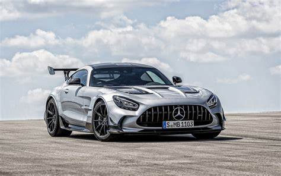
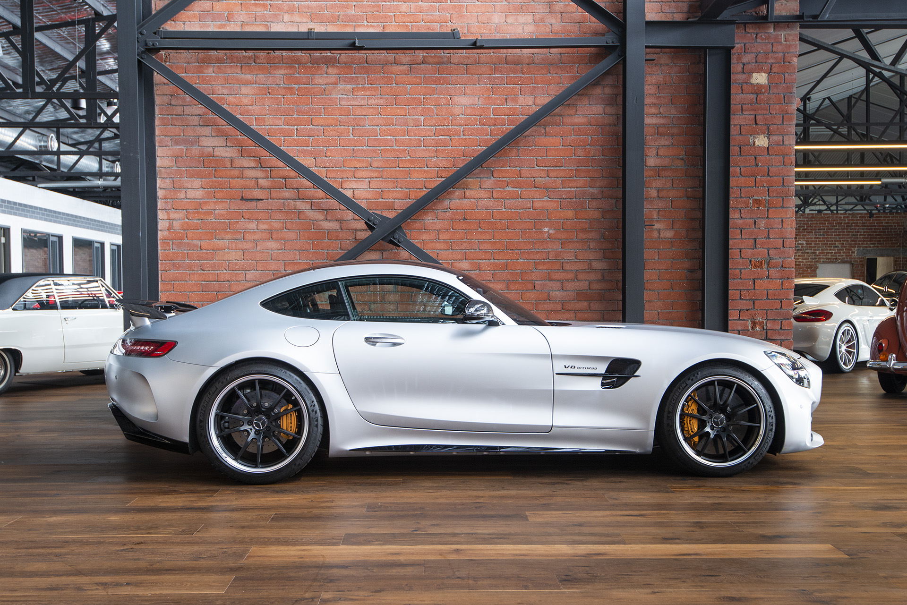
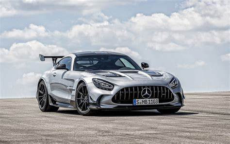
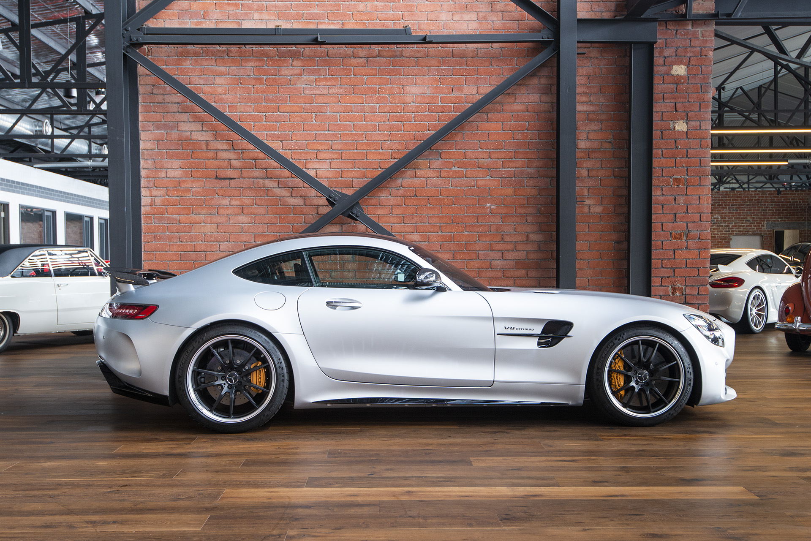

Silver Mercedes-Benz AMG-gt FOR SALE!
Silver Mercedes AMG GT: Performance and Precision in a Sleek Package
Overview
The Silver Mercedes AMG GT is a stunning blend of performance, luxury, and German engineering. With its sleek silver exterior and aggressive stance, the AMG GT stands as one of the most dynamic sports cars in the Mercedes lineup. It’s designed to turn heads on the road while delivering thrilling performance on both city streets and the racetrack.
Performance and Features
At the heart of the AMG GT is a handcrafted 4.0L V8 biturbo engine that delivers up to 577 horsepower in the higher trims, allowing it to sprint from 0 to 100 km/h in an exhilarating 3.5 seconds. The car features a 7-speed dual-clutch transmission for fast, smooth gear changes and is equipped with AMG Ride Control for enhanced handling and stability at high speeds.
Inside, the Mercedes AMG GT offers a luxurious and driver-centric cabin. Premium materials, including Nappa leather and carbon-fiber accents, surround the driver, while the advanced infotainment system and digital instrument cluster provide both comfort and cutting-edge technology. It’s a car that seamlessly combines high-performance engineering with the elegance and comfort Mercedes is known for.
Market Price
The market price for a Silver Mercedes AMG GT starts at around $120,000 in the United States, but can go up to $160,000 for higher trims like the AMG GT R. In South Africa, prices range from approximately R2.5 million to R3.5 million, depending on specifications, features, and customization options.
The AMG GT is more than just a sports car—it’s a statement of performance, luxury, and driving pleasure, offering a driving experience that’s as thrilling as it is refined.